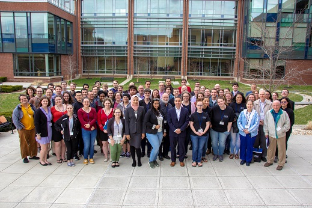
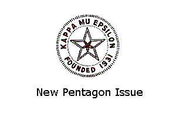

In KME News
-
2019 National Convention
 The 2019 KME National Convention was held April 11-13 at Frostburg State University in Frostburg, Maryland. -
New Problem Corner
 A new set of Problem Corner questions is available. Head over to the The Problem Corner page to get the Spring 2019 issue. -
New Pentagon Issue
A new issue of The Pentagon is available. Head over to the The Pentagon page to get the Fall 2018 issue. -
2019 National Convention
 Congratulations to Dr. Rhonda McKee, recipient of the George R. Mach Distinguished Service Award.
Congratulations to Dr. Rhonda McKee, recipient of the George R. Mach Distinguished Service Award.
Kappa Mu Epsilon is a specialized honor society in Mathematics. KME was founded in 1931 to promote the interest of mathematics among undergraduate students. Its chapters are located in colleges and universities of recognized standing which offer a strong mathematics major. The chapters' members are selected from students of mathematics and other closely related fields who have maintained standards of scholarship, have professional merit, and have attained academic distinction. Both men and women are eligible for membership.